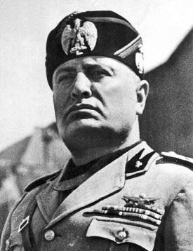

Puterile Axei au fost națiunile care au luptat contra Aliaților în timpul celui de-al Doilea Război Mondial. Cele trei puteri principale ale Axei au fost Germania Nazistă, Italia Fascistă și Japonia imperialistă, care se numeau ,,Axa Roma-Berlin-Tokyo. În perioada de apogeu, Puterile Axei controlau imperii care dominau o mare parte a Europei, Asiei și a Oceanului Pacific, însă cel de-al Doilea Război Mondial s-a încheiat cu înfrângerea lor totală. Ca Aliații, apartenența la Axă era foarte dinamică și mai multe națiuni au intrat și apoi au părăsit Axa. Pe lângă Germania, Italia și Japonia mai erau: România, Ungaria și Finlanda.
- Germania
- Italia
- Japonia
Germania a fost puterea principală a Axei în Europa și de facto, liderul alianței cu autoritate asupra Pactului Tripartit. Germania a fost condusă de Adolf Hitler și al său Partid Muncitoresc German Național-Socialist (Partiul Nazist).
Cetățenii germani au simțit că țara lor a fost umilită în urma Tratatului de la Versailles, de la sfârșitul Primul Război Mondial, trebuind să cedeze fie o parte din teritoriul imperial, noii Republici Poloneze, fie coloniile sale. Presiunea reparațiilor de război a afectat mult economia germană, contribuind la hiperinflația de la începutul anilor 1920.
În 1923, Franța a ocupat regiunea Ruhr ca urmare a plăților cu întârziere. Deși situația Germaniei a început să se îmbunătățească din punct de vedere economic în mijlocul anilor 1920, Marea Depresie a creat dificultăți mari economice și o creștere a forțelor politice care a pledat pentru soluții radicale la problemele Germaniei. Naziștii, în conformitate cu Adolf Hitler, au urmat și promovat o politică naționalistă, promovând ideea că Germania a fost trădată de către evrei și comuniști și a promis să reconstruiască țara, ca o mare putere care, prin extindere, să includă Alsacia-Lorena, Austria, Sudeții și alte teritorii german-populate din Europa. În afară de aceasta, naziștii au scopul de a ocupa teritoriul non-german al Poloniei, Țărilor baltice, și Uniunii Sovietice, de a le coloniza cu germani, ca parte a politicii naziste de a solicita Lebensraum (în germană: "spațiu de locuit"), în Europa de Est.
Cu remilitarizarea Renaniei în martie 1936, Germania a renunțat la Tratatul de la Versailles. Germania a anexat Austria, mai târziu, în 1938 (operațiunea Anschluss), regiunea sudetă din Cehoslovacia și teritoriul Memel din Lituania, în 1939. Germania a invadat apoi restul Cehoslovaciei, în 1939, după crearea Protectoratului Boemiei, al Moraviei și Slovaciei, în calitate de țară.
Italia a fost condusă de dictatorul fascist Benito Mussolini, în numele Regelui Victor Emanuel al III-lea al Italiei.În timpul Primului Război Mondial, Italia a intrat în război de partea Antantei, deci împotriva Germaniei și Austro-Ungariei. La încheierea războiului, Italia a făcut mai puține progrese decât a fost promis în Pactul de la Londra. Pactul de la Londra a fost anulat odată cu Tratatul de la Versailles, naționaliștii italieni și publicul au văzut acest lucru ca o nedreptate și un ultraj; au existat peste 600.000 de victime italiene. Acest resentiment, împreună cu nemulțumirile interne și o încetinire economică a permis fasciștilor italieni conduși de Benito Mussolini să se ridice la putere în 1922.
În secolul al 19-lea, după unificare, o mișcarea naționalistă a crescut în jurul conceptului irredenta Italia, care a pledat pentru includerea vorbitorilor de italiană în zonele aflate sub dominația străină în Italia. Nu a fost o dorință de a anexa teritoriile dalmate, care au fost anterior condus de către venețieni și care au avut, prin urmare, vorbitori de limbă italiană. Intenția regimului fascist italian a fost de a crea un "Nou Imperiu Roman", în care Italia va domina Marea Mediterană. În anii 1935-1936, Italia a invadat și anexat Etiopia și guvernul fascist a proclamat crearea "Imperiului Italian" . Liga Națiunilor, condusă de interesele britanice în aceeași zona, au protestat, cu toate acestea nici o acțiune nu a fost luată serios , deși mai târziu Italia se va confrunta cu izolarea diplomatică din mai multe țări. În 1937 Italia a părăsit Liga Națiunilor, și în același an a aderat la Pactul Anti-Comintern, semnat de Germania și Japonia în anul precedent. In martie/aprilie 1939 trupele italiene au invadat și anexat Albania. Germania și Italia au semnat Pactul de oțel pe 22 mai.
Japonia a fost puterea principală a Axei în Asia și Pacific. Imperiul Japoniei, denumit în mod obișnuit Japonia imperialistă, a fost o monarhie constituțională condusă de Hirohito. Constituția a prescris că "Împăratul este capul imperiului, combinând în sine drepturile de suveranitate, și exercițiile, în conformitate cu prevederile prezentei Constituții" (articolul 4) și că "împăratul are comanda supremă asupra armatei și marinei"(articolul 11).
Politica expansionistă a Japoniei, înstrăinată de alte țări din Liga Națiunilor,mai apropiată de a Germaniei și Italiei, care aveau aceeași politică. Principalii pași ai Japoniei aliindu-se militar cu Germania a început cu Pactul Anti-Comintern,în care cele două țări se angajau să se apere de agresiunea Uniunii Sovietice și a oricărei alte puteri.
Prima acțiune majoră a Japoniei a fost atacul împotriva Chinei. Invazia ulterioară japoneză și ocuparea unor părți din China a dus la numeroase atrocități împotriva civililor, cum ar fi masacrul de la Nanking. Japonezii s-au luptat cu fortele sovieto-mongole în Manchukuo în 1938 și 1939. Japonia a încercat să evite războiul cu Uniunea Sovietică prin semnarea unui pact de neagresiune cu Uniunea Sovietică, mai târziu, în 1941.
Atunci când a izbucnit războiul în Europa în 1939, România a fost pro-britanică și aliata polonezilor. Cu toate acestea, după invazia Poloniei de către Germania Nazistă și Uniunea Sovietică, și cucerirea germană din Franța și Țările de Jos, România a constatat ea însăși poziția din ce în ce mai izolată în care se afla. Elementele pro-germane și pro-fasciste au început să crească.
Pactul Ribbentrop-Molotov dintre Germania Nazistă și Uniunea Sovietică conținea într-un protocol secret cedarea unei părți din nordul României, Basarabia, Uniunii Sovietice. La 28 iunie 1940, Uniunea Sovietică a anexat Basarabia și a ocupat și nordul Bucovinei și Ținutul Herța. La 30 august 1940, prin Dictatul de la Viena, Germania a forțat România să cedeze nordul Transilvaniei Ungariei. De asemenea, Dobrogea de Sud a fost cedată Bulgariei în septembrie 1940. Într-un efort de a potoli setea elementelor fasciste și de a obține protecția Germaniei, la 6 septembrie 1940 regele Carol al II-lea l-a numit prim-ministru pe generalul Ion Antonescu.
Două zile mai târziu,pe 8 septembrie 1940, Antonescu l-a silit pe rege să abdice și să transmită prerogativele regale fiului său, Mihai, după care el însuși s-a declarat Conducător, cu puteri dictatoriale. Sub domnia Regelui Mihai și a guvernului militar al lui Antonescu, România a semnat Pactul Tripartit pe 23 noiembrie 1940. Trupele germane au intrat în țară în 1941 și au folosit teritoriul românesc ca platformă pentru invazia Iugoslaviei și a Uniunii Sovietice. De asemenea, România a fost un important furnizor de resurse pentru Germania nazistă, în special petrol și cereale.
România s-a alăturat invaziei germane a Uniunii Sovietice la 22 iunie 1941. Aproape 800.000 de soldați români au luptat pe frontul de Est. Zonele anexate de către sovietici au fost ulterior recuperate de către România, împreună cu noua formațiune Transnistreană. În 1943, sovieticii au mutat linia frontului spre vest, reocupând Ucraina. În primăvara anului 1944, Uniunea Sovietică a lansat prima ofensivă în România. În urma loviturii de stat de la 23 August 1944, România a ieșit din alianța cu Puterile Axei, a declarat încetarea unilaterală a războiului împotriva Aliaților și a declarat război Germaniei naziste și Ungariei.
Acordul de armistițiu dintre Aliați și România - 1944 a fost însă semnat la Moscova pe 12 septembrie 1944, astfel că timp de trei săptămâni, România a fost încă socotită ca un inamic de către Aliați, deși devenise deja un inamic pentru Puterile Axei. Alte rezultate ale loviturii de stat de la 23 August 1944 au fost retrocedarea Transilvaniei de Nord României, a Basarabiei și Bucovinei de Nord Uniunii Sovietice. Acordul de armistițiu dintre Aliați și România - 1944 a stabilit despăgubirea URSS-lui de către România.
- Germania si coloniile sale
- Japonia si coloniile sale
- Italia - (pana in 1943)
- Romania - (pana in 1944)
- Bulgaria - (pana in 1944)
- Ungaria
